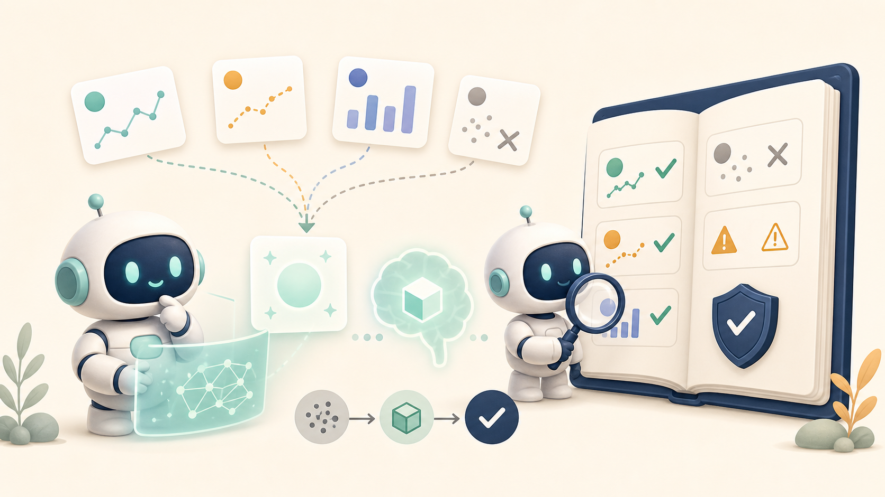

먼저 정리하면
- 이 글은 툴 호출 기반 AI 에이전트를 운영하는 팀이 QA 에이전트를 어디에 붙이고, 무엇을 검증해야 하는지 정하는 데 초점을 둔다.
- QA 에이전트가 최종 답변만 다시 읽으면 자연스러운 문장을 평가할 뿐, 도메인 데이터 오류를 잡기 어렵다.
- 검증 단위는 답변 전체가 아니라
AnswerClaim,ToolResult,Evidence,DomainRule이어야 한다. - 핵심은 “한 번 더 LLM에게 물어보기”가 아니라, 도메인 규칙을 계약으로 만들고 claim 단위로 대조하는 것이다.
AI 에이전트에 툴을 붙이면 hallucination은 줄어든다. 적어도 없는 숫자를 지어내는 일은 줄어든다.
그런데 운영에서 더 까다로운 문제는 따로 있다. 맞는 숫자를 가져와서 틀리게 쓰는 답변이다.
예를 들어 툴은 조건에 맞는 항목 6개를 반환했는데, 최종 답변에는 4개만 들어갈 수 있다. 검색은 성공했다. 데이터도 있었다. 하지만 최종 답변은 누락된 결과를 전체처럼 말한다.
또 다른 경우도 있다. 사용자는 “최근 거래 기준으로 어느 쪽이 더 비싼가”를 물었는데, 에이전트가 한쪽은 실제 관측값으로, 다른 한쪽은 제안값으로 비교한다. 숫자는 모두 데이터에서 가져왔다. 하지만 비교 자체가 틀렸다.
이런 오류는 답변 문장만 읽어서는 잘 보이지 않는다. 문장은 자연스럽고, 숫자도 있고, 결론도 있다. 그래서 QA 에이전트를 하나 더 붙이고 싶어진다.
문제는 여기서 시작된다. QA 에이전트가 답을 다시 읽는다고 곧바로 검증자가 되지는 않는다. 검증자가 되려면 무엇을 틀렸다고 말할 수 있는 기준이 있어야 한다.
문제: 실패는 보통 툴 호출 이후에 생긴다
툴 기반 에이전트의 응답 흐름을 단순화하면 이렇다.
User Question
→ Tool Selection
→ Tool Call
→ Tool Result
→ Draft Answer
→ QA Review
→ Final Answer많은 QA 프롬프트는 마지막 두 단계만 본다.
- 사용자의 질문에 답했는가?
- 답변이 논리적으로 이어지는가?
- 근거 없이 단정하지 않았는가?
- 표현이 명확한가?이 기준은 필요하다. 하지만 도메인 데이터 기반 답변에서는 충분하지 않다. 오류가 Draft Answer 안의 문장 품질이 아니라, Tool Result와 Draft Answer 사이의 변환에서 생기기 때문이다.
실패 패턴을 표로 보면 더 분명하다.
| 실패 패턴 | 겉으로 보이는 답변 | 실제 문제 | 필요한 검증 |
|---|---|---|---|
| 툴 결과 일부 누락 | 여러 항목을 제시함 | 반환된 6개 중 4개만 반영 | tool result와 answer item 대조 |
| 가격 유형 혼용 | 두 가격을 비교함 | 실제 관측값과 제안값을 같은 기준으로 비교 | 비교 가능한 price type인지 확인 |
| 거래 유형 혼동 | 지역, 가격, 기간이 모두 있음 | 질문은 임대 조건인데 매매 데이터를 사용 | question intent와 data type 매칭 |
| 집계 기준 오류 | 전체 건수/평균을 계산함 | 제외해야 할 항목이 포함됨 | include/exclude rule 적용 |
문제는 데이터가 없어서가 아니다. 데이터의 사용 조건이 검증되지 않았다는 데 있다.
방법 1: 답변을 claim 단위로 쪼갠다
QA 에이전트가 최종 답변 전체를 한 번에 읽으면, 검증은 쉽게 감상평이 된다.
“대체로 맞아 보인다.”
“근거가 있어 보인다.”
“답변이 자연스럽다.”
도메인 검증은 이렇게 하면 안 된다. 답변을 검증 가능한 claim 단위로 쪼개야 한다.
예를 들어 최종 답변에 이런 문장이 있다고 하자.
A가 B보다 최근 가격이 높습니다.이 문장은 최소한 다음 구조로 바뀌어야 검증할 수 있다.
{
"claim_id": "c1",
"claim": "A가 B보다 최근 가격이 높다",
"claim_type": "price_comparison",
"left": {
"entity": "A",
"value": 840000000,
"price_type": "observed_transaction",
"period": "recent"
},
"right": {
"entity": "B",
"value": 790000000,
"price_type": "proposed_price",
"period": "current"
},
"required_rule": "same_price_type_only"
}이제 QA는 문장을 평가하지 않는다. 구조를 평가한다.
left.price_type = observed_transaction
right.price_type = proposed_price
required_rule = same_price_type_only이 claim은 숫자 크기만 보면 맞아 보일 수 있다. 하지만 도메인 규칙으로 보면 invalid다. 관측된 거래 가격과 제안 가격은 같은 기준으로 직접 비교할 수 없기 때문이다.
여기서 QA 에이전트가 해야 할 일은 “문장이 자연스럽다”고 말하는 게 아니다. 다음처럼 판정해야 한다.
{
"claim_id": "c1",
"status": "invalid",
"reason": "서로 다른 가격 유형은 직접 비교할 수 없음",
"suggested_action": "같은 price_type으로 다시 조회하거나, 두 값의 성격 차이를 명시하고 비교를 보류"
}이 정도까지 내려와야 QA가 검증자가 된다.
방법 2: ToolResult와 AnswerClaim을 대조한다
툴 결과 누락도 같은 방식으로 볼 수 있다.
툴이 이런 결과를 반환했다고 하자.
{
"tool_name": "search_items",
"query_id": "q1",
"result_count": 6,
"items": ["i1", "i2", "i3", "i4", "i5", "i6"]
}그런데 최종 답변에는 네 개만 들어갔다.
{
"answer_items": ["i1", "i2", "i3", "i4"]
}이건 LLM이 숫자를 지어낸 오류가 아니다. 툴 결과와 답변 사이의 alignment 오류다.
검증 로직은 단순할 수 있다.
def validate_result_coverage(tool_result, answer):
returned = set(tool_result["items"])
mentioned = set(answer["answer_items"])
missing = returned - mentioned
if missing:
return {
"status": "invalid",
"reason": "tool_result_not_fully_reflected",
"missing_items": sorted(missing),
}
return {"status": "valid"}실제 시스템에서는 더 복잡하다. 중복 제거가 필요할 수 있고, 일부 항목은 의도적으로 제외될 수 있다. 그래서 더더욱 규칙이 필요하다. “툴 결과를 모두 반영하라”가 아니라, “어떤 조건에서 제외할 수 있고, 제외했다면 최종 답변에 어떻게 표시할 것인가”를 정해야 한다.
예를 들어 일부 항목을 제외할 수 있다면 answer schema에 이런 필드가 필요하다.
{
"answer_items": ["i1", "i2", "i3", "i4"],
"excluded_items": [
{
"item_id": "i5",
"reason": "out_of_scope"
},
{
"item_id": "i6",
"reason": "duplicate"
}
]
}이렇게 되어 있으면 QA 에이전트는 “4개만 썼네”에서 멈추지 않는다. 6개 중 4개를 쓴 이유가 규칙에 맞는지 확인할 수 있다.

방법 3: 도메인 규칙은 프롬프트 문장이 아니라 계약으로 둔다
“실거래가와 호가를 구분하세요” 같은 프롬프트는 도움이 된다. 하지만 시스템이 커질수록 프롬프트만으로는 약하다.
모델은 매번 문장을 읽고 해석해야 한다. 툴이 늘고, 데이터 유형이 늘고, 답변 경로가 늘어나면 같은 규칙을 여러 곳에서 반복해서 지켜야 한다. 그러면 언젠가 빠진다.
더 안전한 방식은 도메인 규칙을 데이터 계약처럼 다루는 것이다.
{
"rule_id": "same_price_type_only",
"claim_type": "price_comparison",
"description": "가격 비교는 같은 price_type끼리만 허용한다.",
"required_fields": ["left.price_type", "right.price_type"],
"valid_when": "left.price_type == right.price_type",
"on_fail": "comparison_not_allowed"
}거래 유형도 마찬가지다.
{
"rule_id": "question_transaction_type_match",
"claim_type": "market_answer",
"description": "질문 의도와 사용 데이터의 transaction_type이 일치해야 한다.",
"required_fields": ["question.transaction_type", "tool_result.transaction_type"],
"valid_when": "question.transaction_type == tool_result.transaction_type",
"on_fail": "wrong_data_type"
}집계 규칙도 계약으로 표현할 수 있다.
{
"rule_id": "exclude_cancelled_records",
"claim_type": "aggregate_count_or_average",
"description": "집계에는 취소된 항목을 포함하지 않는다. 포함하는 경우 답변에 명시한다.",
"required_fields": ["record.status", "answer.caveat"],
"valid_when": "record.status != 'cancelled' OR answer.caveat mentions inclusion policy",
"on_fail": "aggregation_policy_missing"
}여기서 중요한 점은 규칙을 꼭 코드로만 만들라는 뜻이 아니다. 처음에는 문서나 YAML이어도 된다. 다만 생성 에이전트와 QA 에이전트가 같은 규칙을 같은 형식으로 참조해야 한다.
QA 에이전트에는 답변이 아니라 검증 입력을 줘야 한다
QA 에이전트에게 최종 답변만 주면, QA는 독후감을 쓰게 된다.
입력: final_answer
출력: 좋아 보임 / 조금 더 명확히 쓰면 좋음도메인 QA에는 입력이 더 필요하다.
입력:
- user_question
- selected_tool
- tool_input
- tool_result
- draft_answer
- extracted_claims
- domain_rules
출력:
- valid / invalid / needs_human_review
- failed_rule_ids
- evidence
- suggested_action구조로 쓰면 이렇다.
User Question
→ Tool Call
→ Tool Result
→ Draft Answer
→ Claim Extraction
→ Domain Rule Check
→ Evidence Alignment Check
→ Final Answer or Hold이 흐름에서 QA 에이전트는 마지막 문장을 다시 읽는 역할이 아니다. Claim Extraction 이후의 구조화된 검증을 수행하는 역할이다.
검증 결과도 자연어 코멘트만으로는 부족하다.
{
"status": "needs_human_review",
"failed_rules": [
{
"rule_id": "same_price_type_only",
"claim_id": "c1",
"evidence": {
"left.price_type": "observed_transaction",
"right.price_type": "proposed_price"
},
"message": "서로 다른 가격 유형을 직접 비교했습니다. 같은 유형으로 다시 조회하거나 비교를 보류해야 합니다."
}
]
}이런 형태가 있어야 운영에서 쓸 수 있다. 어떤 규칙이 실패했는지, 어떤 evidence 때문에 실패했는지, 다음 행동이 무엇인지 남기 때문이다.
모든 규칙을 LLM에게 맡기지 않는 편이 낫다
도메인 QA를 설계하다 보면 모든 판단을 QA 에이전트에게 맡기고 싶어진다. 하지만 그러면 같은 문제가 반복된다.
LLM은 애매한 문장을 잘 읽는다. 대신 정확한 판정은 흔들릴 수 있다. 반대로 코드는 유연한 해석은 못 하지만, 정해진 조건은 흔들리지 않는다.
그래서 나누는 편이 낫다.
| 검증 항목 | 추천 방식 |
|---|---|
| 툴 결과 항목이 최종 답변에 반영되었는가 | 코드/후처리 |
| 질문의 거래 유형과 사용 데이터 유형이 일치하는가 | 코드/룰 엔진 |
| 같은 유형의 값끼리 비교했는가 | 코드/룰 엔진 |
| 답변 문장이 사용자에게 오해 없이 설명되는가 | LLM QA |
| 제한 조건과 caveat가 자연스럽게 포함되었는가 | LLM QA |
| 규칙 충돌이나 예외 상황을 어떻게 설명할 것인가 | LLM + 사람 검수 |
QA 에이전트는 모든 검증을 혼자 처리하는 모델이 아니라, deterministic check와 LLM review를 묶는 인터페이스에 가깝다.
에이전트를 늘리기 전에 검증 가능한 단위를 먼저 정해야 한다
에이전트가 틀리면 에이전트를 하나 더 붙이고 싶어진다. 생성 에이전트가 있고, 검색 에이전트가 있고, QA 에이전트가 있고, reviewer를 하나 더 둘 수도 있다.
역할을 나누는 접근은 유용하다. 하지만 검증 가능한 단위가 없으면 에이전트 수만 늘어난다. 판단 경로는 복잡해지고, 오류는 더 그럴듯해진다.
먼저 정해야 하는 것은 에이전트 수가 아니라 인터페이스다.
ToolResult
- 어떤 데이터를 반환했는가
- 각 값의 type/unit/status/freshness는 무엇인가
- 제외 가능한 항목은 무엇인가
AnswerClaim
- 답변이 어떤 claim을 하고 있는가
- 각 claim은 어떤 tool result를 근거로 삼는가
- claim type은 무엇인가
DomainRule
- 이 claim type에 적용할 규칙은 무엇인가
- 어떤 필드가 필요하고 어떤 조건이면 실패인가
ValidationResult
- 어떤 claim이 어떤 rule에서 실패했는가
- 근거 evidence는 무엇인가
- 재조회, 수정, 보류, 사람 검수 중 무엇을 해야 하는가이 정도의 계약이 생기면 QA 에이전트는 답변을 “다시 읽는” 모델에서 벗어난다. 무엇을 확인해야 하는지 알고, 어떤 규칙으로 실패를 판정해야 하는지 알게 된다.
물론 처음부터 거창한 평가 시스템을 만들 필요는 없다. 작은 것부터 시작하면 된다.
1. 최종 답변에서 claim을 추출한다.
2. 각 claim이 참조한 tool result id를 남긴다.
3. 가격/기간/거래 유형처럼 위험한 필드만 먼저 rule로 만든다.
4. deterministic check로 잡을 수 있는 것은 코드로 잡는다.
5. LLM QA는 문장화, caveat, 예외 설명을 맡긴다.QA 에이전트를 하나 더 붙이는 일은 쉽다. 어려운 일은 그 QA가 무엇을 근거로 “이 답은 틀렸다”고 말할 수 있게 만드는 것이다.
검증은 감상평이 아니라 판정에 가깝다. 판정을 하려면 기준이 있어야 한다. AI 에이전트의 품질은 에이전트가 몇 개인지가 아니라, 생성자와 검증자가 같은 데이터 계약을 보고 있는지에서 갈린다.